Loisirs
Découvrez mes centres d'intérêts et mes passions !
Animaux
Entourée d'animaux depuis petite, j'ai développé une empathie et une passion pour eux. Le chien de la famille a 16 ans et il a été recueilli dans un SPA. Je suis tellement heureuse d'avoir participé au bonheur et au sauvetage de cet animal.
Je souhaite poursuivre dans cette voie et contribuer au maximum au bien-être animal !
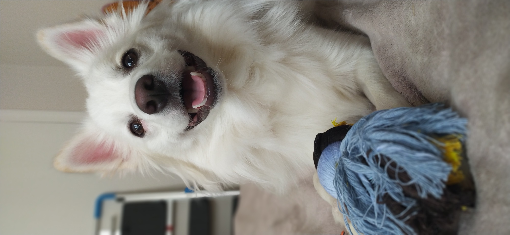
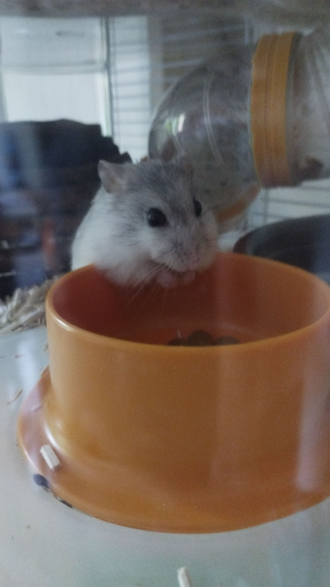
Dessins
Depuis mon enfance, je pratique le dessin, particulièrement des personnages. J'ai diversifié les techniques et les styles : réalisme, aquarelle, feutre, noir et blanc. Cette passion est à la base de ma créativité.
Cela m'a permis de développer l'aspect visuel de certains de mes travaux scolaires.
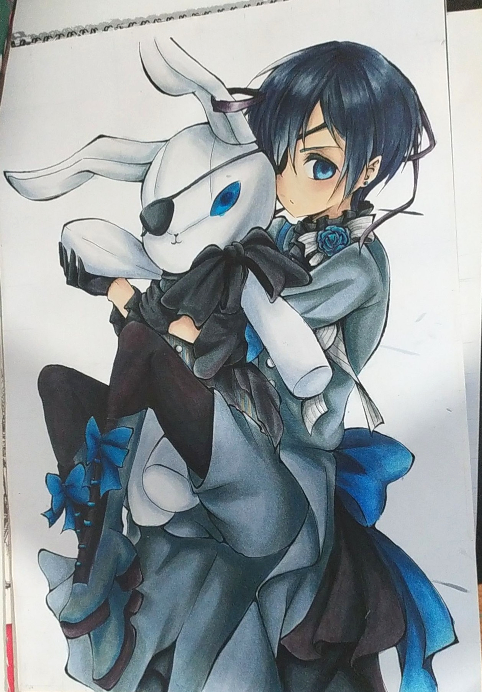
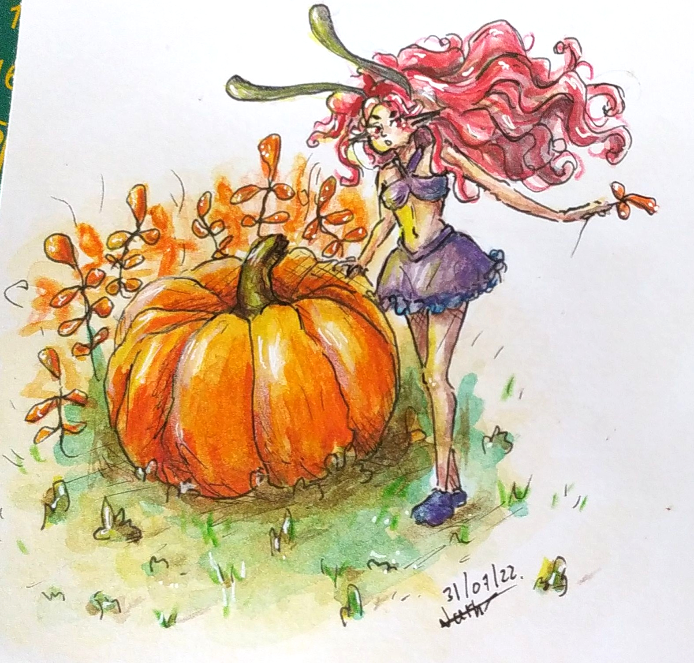
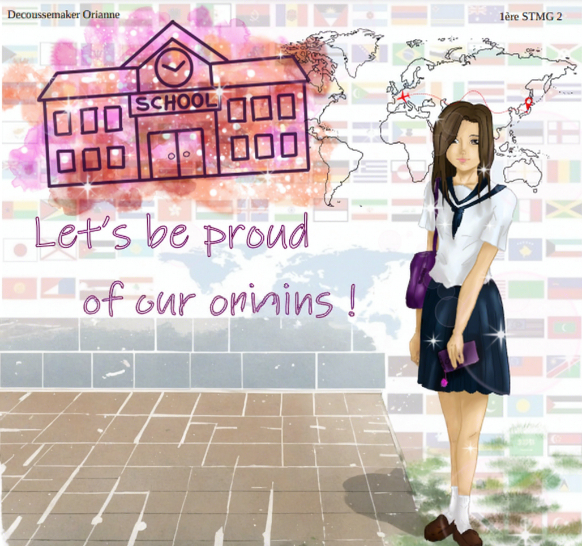
Randonnée
Depuis peu, j'ai développé un nouvel hobby : la marche, surtout en montagne. C'est une activité que j'effectue de temps en temps avec mes frères. Cela permet de prendre l'air, de faire des photos et de s'inspirer des paysages.
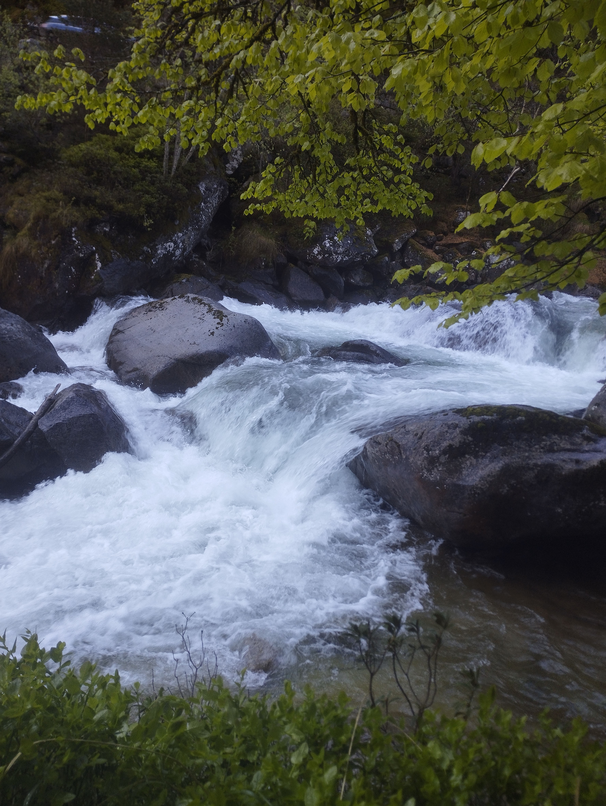
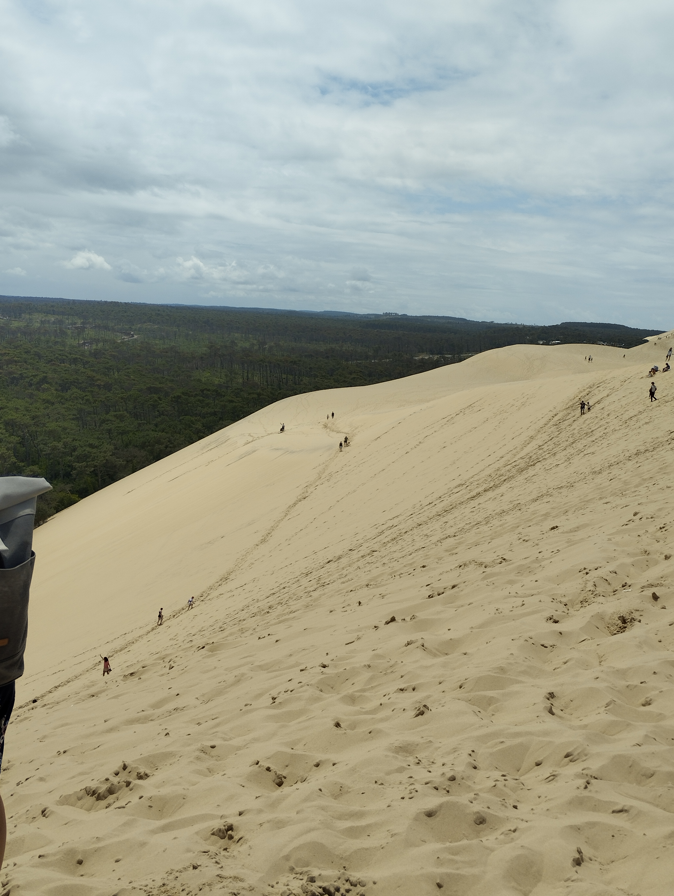


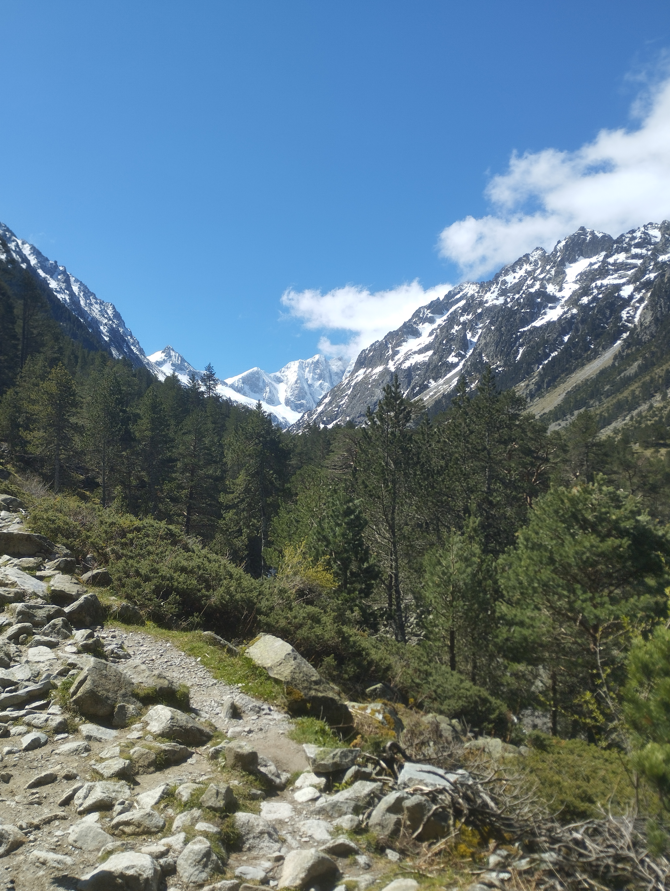
Photos
J'aime figer un moment dans le temps et pouvoir le garder en souvenir. Les paysages sont une grande source d'inspiration et de créativité essentielle dans mon quotidien. J'ai une certaine sensibilité à la vue de paysages de montagnes, de cascades ou de vagues qui se cassent sur le sable.
Je fais aussi de nombreux autoportraits qui permettent de prendre confiance en soi, ainsi que des photos d'animaux ! Cela apporte un bon sens de l'observation et une attention aux détails.
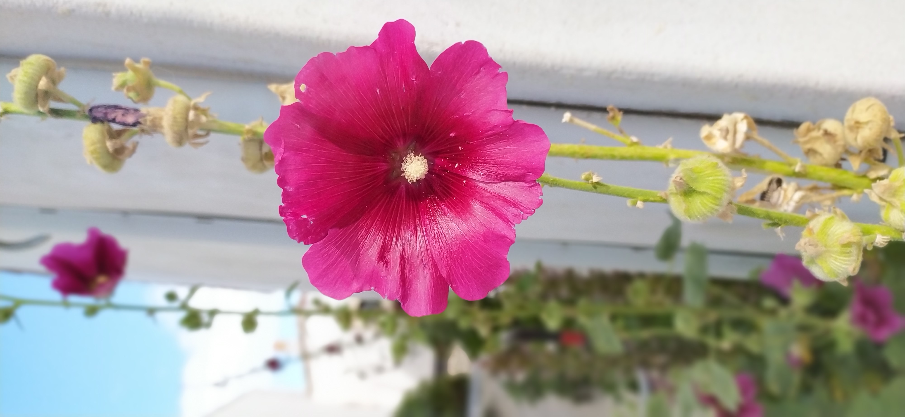
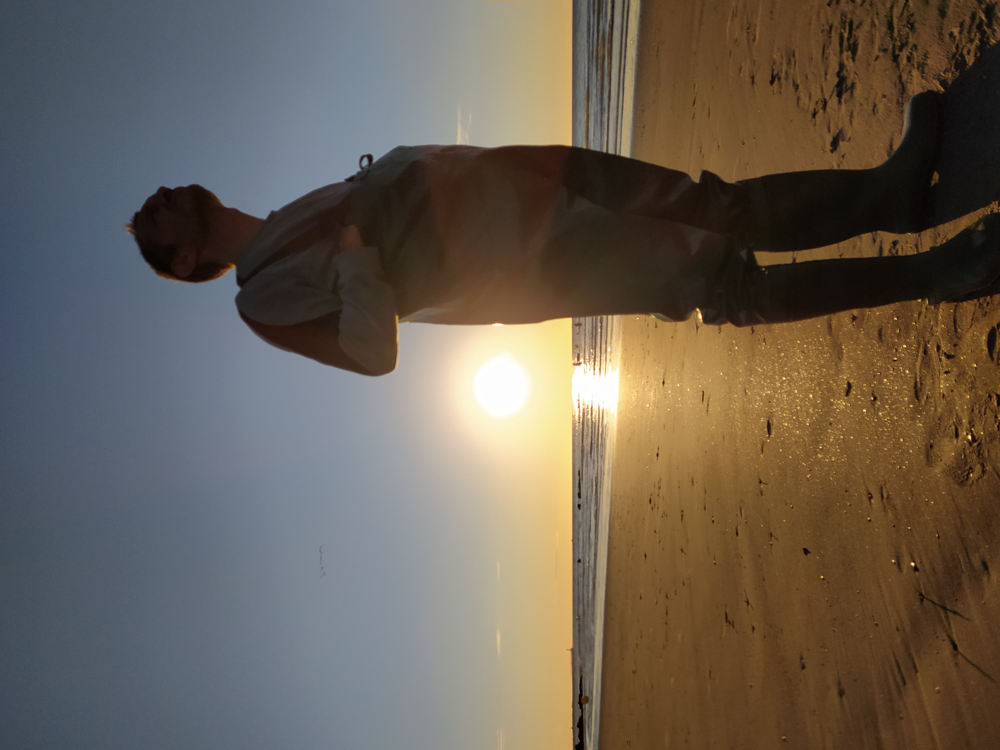
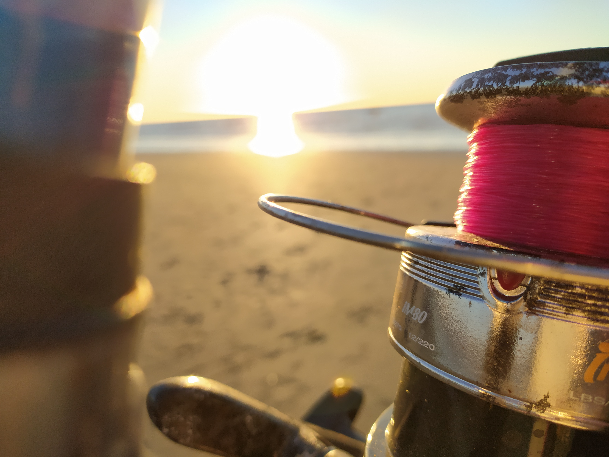
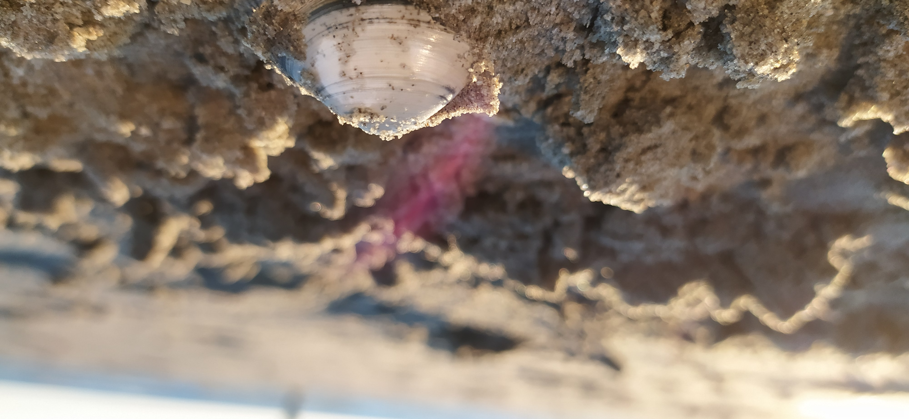
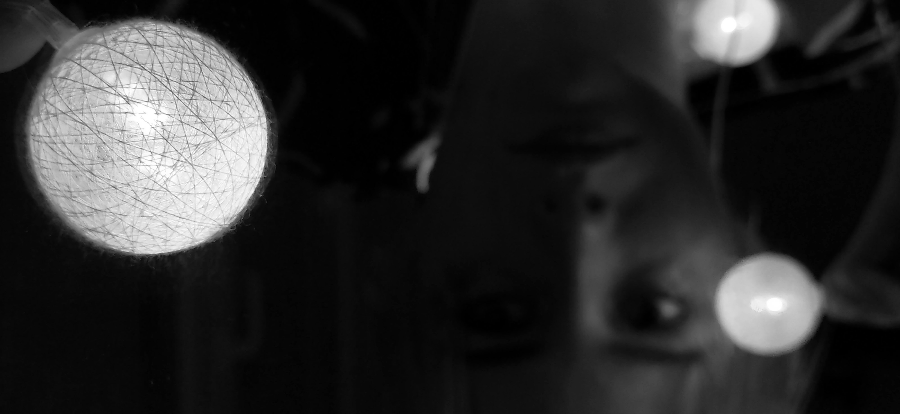